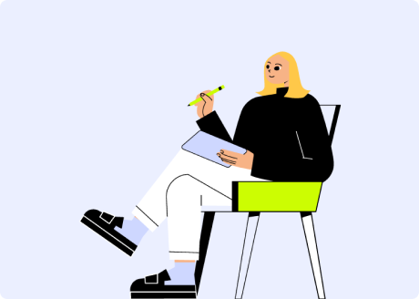
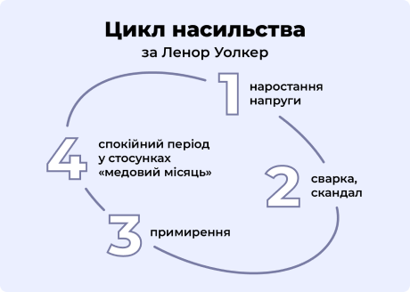

Цикл домашнього насильства

“Якщо насильство трапилося один раз, то обов’язково повториться”.
— Dr. Lenore E. Walker
Американська психологиня Ленор Уолкер описала "цикл насильства" в сім'ї
Головна умова існування циклу — залучення до нього і агресора(-ки), і постраждалого(-ої). Якщо жоден з партнерів(-ок) не зруйнує цикл, згодом насильство стає все більш інтенсивним, і цикл повторюється через дедалі коротші проміжки часу.

Переклад: Цикл насильства за Ленор Уолкер // 1. наростання напруги 2. сварка, скандал 3. примирення 4. спокійний період у стосунках "медовий місяць"
Фази циклу насильства
Фаза збільшення напруги
Що відбувається у парі?
Наростає незадоволення через стрес у повсякденному житті, проте його висловлення не відбувається. Проявляється асиметрія сил між партнерами(-ками):
- Кривдник(-ця) обурюється та намагається встановити владу і контроль над партнером(-кою)
- Партнер(-ка) кривдника(-ці) намагається підлаштуватися, боїться обговорювати проблему, щоб не погіршувати стосунки
Що відбувається з кривдником(-цею)?
Протягом цього періоду кривдник(-ця) відчуває загрозу: його/її ігнорують, дратують, кривдять, навмисно виводять із себе.
Він/вона схиляє партнера(-ку) до власної позиції, застосовує попередження, погрози, залякування, шантаж, маніпуляції, вимагає відповідати власним очікуванням, знецінює думку партнера(-ки).
Що відбувається з постраждалою особою?
Відчуває збентеження, страх висловлювати власну позицію, напругу, тривогу перед погіршенням ситуації і подальшим вибухом.
Постраждалий(-а) намагається владнати стосунки, уникаючи конфронтації з партнером(-кою); з метою попередження прямої чи опосередкованої загрози стає покірною(-им) і дбайливою(-им), намагається відповідати очікуванням кривдника(-ці).
Фаза вибуху
Фаза каяття: "медовий місяць"
Примирення та спокій у стосунках
Що відбувається у парі?
Примирення характеризується вибаченнями та спалахом любові, або навпаки, ігноруванням інциденту. Кривдник(-ця) запевняє, що насильство ніколи не повториться знову, та обіцяє змінитися.
У цей період відносини здаються стабільними та мирними, відбувається тимчасове затишшя.
Що відбувається з кривдником(-цею)?
Кривдник(-ця) справді може відчути докори совісті та гостре почуття провини. Проте він/вона також побоюється, що постраждала особа звернеться до поліції або розірве стосунки.
Поведінка кривдника(-ці) раптово змінюється: він/вона стає ніжним(-ою) і чуйним(-ою), обсипає партнера(-ку) вибаченнями, подарунками, оточує турботою, може погодитися на сімейну психотерапію, обіцяє виправитися, створює в будинку атмосферу спокою та затишку.
Кривдник(-ця) також може загрожувати самогубством у разі розриву стосунків або розлучення.
Що відбувається з постраждалою особою?
Постраждалий(-а) відчуває провину за дії кривдника(-ці) та за свою поведінку, яка нібито призвела до насильства; побоюється, що відмова від примирення спровокує новий акт насильства; сподівається, що насильство більше ніколи не повториться; відчуває страх, що покарання кривдника(-ці) за акт насильства зруйнує стосунки або життя кривдника(-ці).
Постраждалий(-а) може шукати виправдання поведінці кривдника(-ці) та спрямовувати свої дії на її зміну. Якщо немає остаточного рішення вийти з циклу насильства, постраждалий(-а) може забрати заяву із поліції.